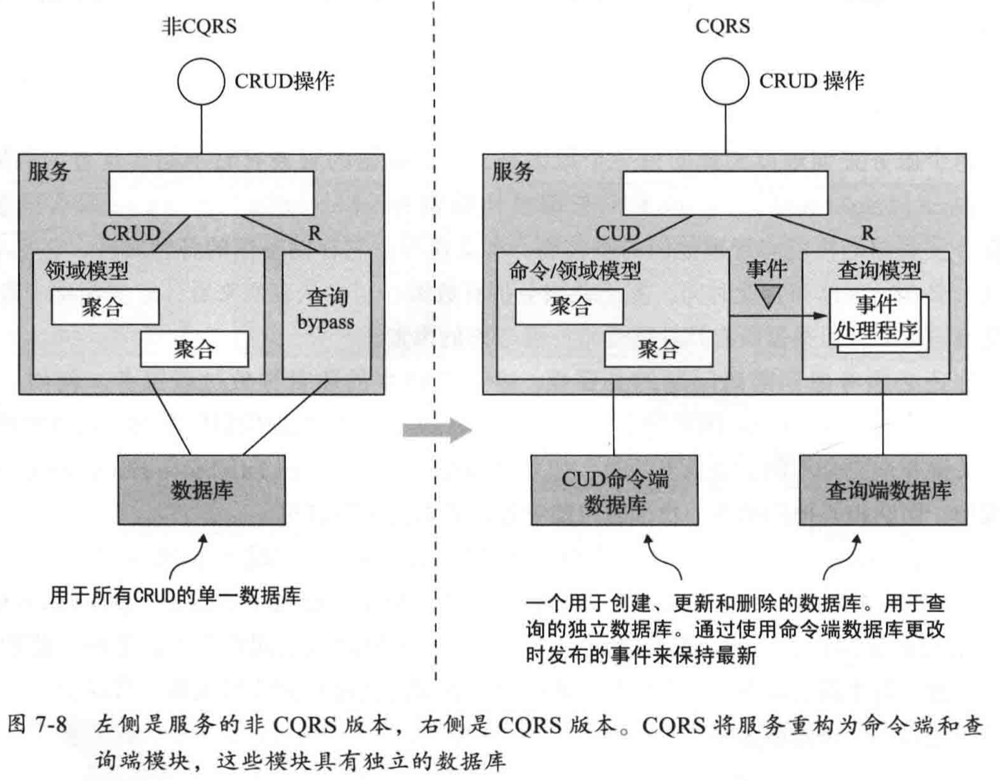
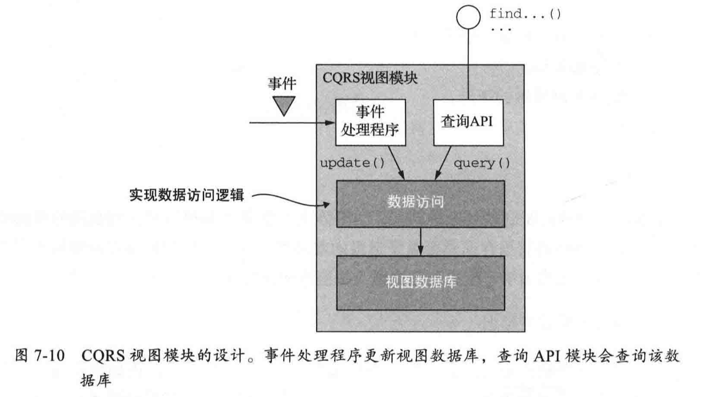

两种查询模式
在微服务架构中实现查询操作有两种不同的模式：
- API 组合模式：这是最简单的方法，应尽可能使用。它的工作原理是让拥有数据的服务的客户端负责调用服务，并组合服务返回的查询结果。
- 命令查询职责隔离（CQRS)模式：它比 API 组合模式更强大，但也更复杂。它维护一个或多个视图数据库，其唯一目的是支持查询。
API 组合模式
API 组合模式有两种类型的参与者
- API 组合器：它通过查询数据提供方的服务来实现查询操作。
- 数据提供方服务：拥有查询返回的部分数据的服务。
API 组合模式是否可使用的几个因素：
- 数据分区方式
- 拥有数据的服务公开 API 的功能
- 服务使用数据库的功能
担任 API 组合器的三个选择
- 由服务的客户端扮演 API 组合器的角色
- 实现应用程序外部 API 的 API Gateway 来扮演 API 组合器的角色
- 将 API 组合器实现为独立的服务
API 组合器应尽可能地并行调用提供方服务，最大限度地缩短查询操作的响应时间。
API 组合模式好处和弊端
好处
- 简单直观
弊端
- 增加了额外的开销
- 带来可用性降低的风险
- 提高可用性方案：返回缓存数据或不完整数据
- 缺乏事务数据一致性
CQRS 模式
CQRS 是命令查询职责隔离 (Command Query Responsibility Segregation） 的简称，它涉及隔离或问题的分隔。它将持久化数据模型和使用数据的模块分为两部分：命令端和查询端。
- 命令端模块和数据模型实现创建、更新和删除操作（缩写为 CUD，例如：HTTP POST、PUT 和 DELETE)。
- 查询端模块和数据模型实现查询（例如 HTTP GET)。查询端通过订阅命令端发布的事件，使其数据模型与命令端数据模型保持同步。

CQRS 好处与弊端
好处
- 在微服务架构中高效地实现查询。
- 高效地实现多种不同的查询类型。
- 在基于事件湖源技术的应用程序中实现查询。
- 更进一步地实现问题隔离。
弊端
- 更加复杂的架构。
- 处理数据复制导致的延迟。
CQRS 设计
CQRS 视图模块包括由一个或多个查询操作组成的 APl。它通过订阅由一个或多个服务发布的事件来更新它的数据库视图，从而实现这些查询操作。

- 数据访问模块实现数据库访问逻辑。
- 事件处理程序和查询 API 模块使用数据访问模块来更新和查询数据库。
- 事件处理程序模块订阅事件并更新数据库。
- 查询 API 模块负责实现查询 API。
NoSQL
NoSQL 数据库通常具有有限的事务模式和较少的查询功能。在一些情况下， NOSQL 数据库比 SQL 数据库更有优势，包括更灵活的数据模型以及更好的性能和可扩展性。
NoSQL 数据库通常是 CQRS 视图的一个很好的选择，CQRS 可以利用它们的优势并忽略其弱点。CQRS 视图受益于 NoSQL 数据库更丰富的数据模型和性能。它不受 NoSQL 数据库事务处理能力的限制，因为 CQRS 只需要使用简单的事务并执行一组固定的查询即可。
判断视图未及时更新的一个思路
命令和查询模块 API 可以使客户端使用以下方法检测不一致性。
- 命令端操作将包含已发布事件的 ID 标记返回给客户端。
- 客户端把这个事件有关的 ID 传递给查询操作，如果该事件尚未更新视图，则返回查询错误。视图模块可以使用重复事件检测机制来实现这样的功能。
检测重复事件
OrderHistoryDaoDynamoDb DAO 可以使用名为 «aggregateType>><<aggregateId>> 的属性跟踪从每个聚合实例接收的事件，其值是接收到的最高事件 ID。如果属性存在且其值小于或等于事件 ID，则事件是重复的。
增量式构建 CQRS视图
- 基于其先前的快照和自创建快照以来发生的事件，定期计算每个聚合实例的快照
- 使用快照和任何后续事件创建视图